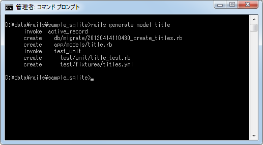
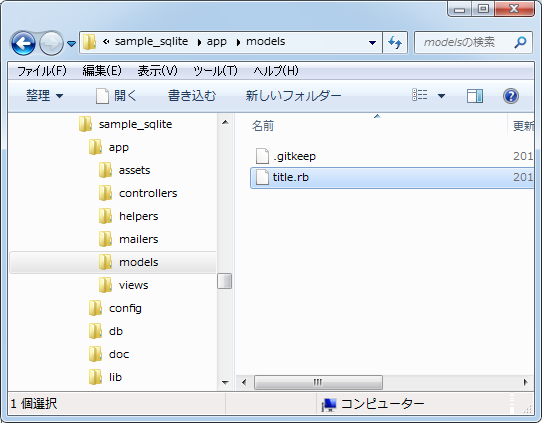
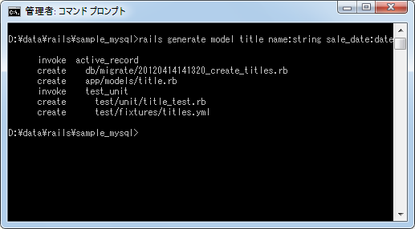
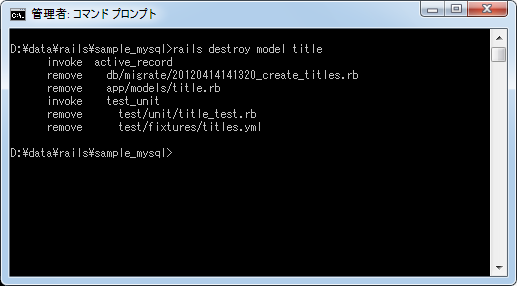

モデルの作成とRailsで指定可能なデータ型
Railsでデータベースとのやり取りを行なうために用意されているのがモデルです。1つのモデルクラスが1つのテーブルに対応しており、モデルクラスのオブジェクトはテーブルの1行に相当します。ここではモデルの作成方法について解説します。また合わせてRailsでカラムに指定することができるデータ型もご紹介します。
1.モデルの作成
2.テーブルに含まれるカラムを指定してモデルを作成
3.モデルの削除
モデルの作成
モデルの作成方法です。手動でモデル用のクラスを記述することも可能ですが、次のコマンドを実行することで必要なファイルを自動的に作成することができます。
rails generate model モデル名
では実際に試してみます。コマンドプロンプトを起動し、SQLite用のアプリケーションのルートに移動し次のようにコマンドを実行して下さい。
rails generate model title

作成されたファイルの中で「app/models/title.rb」が作成されたモデルに関するファイルとなります。

拡張子から分かる通り作成されたファイルはRubyスクリプトが記述されたテキストファイルです。ではテキストエディタでファイルを開いてみます。
class Title < ActiveRecord::Base end
ActiveRecord::Baseクラスを継承したクラスが定義されています。クラス名は「Title」となっており、モデル名で指定した名前の先頭が大文字になったものになるようです。
またもう一つ「db/migrate/20120414110430_create_titles.rb」というファイルが作成されています。これはマイグレーションスクリプトと呼ばれるファイルです。詳しくは次のページで解説しますが、Railsではマイグレーションと呼ばれる機能を使ってデータベースの中にテーブルを作成したりカラムを追加したりします。
ファイルの中身を一応確認しておきます。
class CreateTitles < ActiveRecord::Migration
def change
create_table :titles do |t|
t.timestamps
end
end
end
このマイグレーションスクリプトを実行すると、自動的に追加されるカラムだけが含まれるテーブルが新しく作成されます。(詳細は次のページで解説します)。
なお作成されるテーブル名はモデル名を複数形にしたものになります。今回モデル名を「title」としましたので、作成されるテーブル名は「titles」となります。
テーブルに含まれるカラムを指定してモデルを作成
先程簡単にモデルを作成すると、同時にモデルに対応したテーブルを作成するためのマイグレーションスクリプトと呼ばれるファイルが作成されると書きました。特に指定しない場合はテーブルに含めるカラムに関する情報は後から手動で記載してくことになるのですが、モデルを作成する時に合わせてカラムに関する情報を記載することで、マイグレーションスクリプトにテーブルに含めるカラムに関する情報を自動的に書き込むことが可能です。
カラムを指定してモデルを作成する場合は次の書式を使います。
rails generate model モデル名 カラム名:データ型 カラム名:データ型 ...
カラム名とデータ型の組み合わせを必要な数だけ記載して下さい。
なおRailsアプリケーションではデータベースとしてSQLiteやMySQLなど色々なデータベースを使用します。データベース毎にデータ型の定義は異なるのですが、ここでデータ型を指定する場合はあらかじめRailsで決められたデータ型の中から選択して指定します。指定可能なデータ型は次の通りです。
binary boolean date datetime decimal float integer primary_key string text time timestamp
Railsのデータ型として指定したものは、実際のデータベースの対応する型に置き換えられます。例えばデータベースとしてMySQLを使っている場合、string型と指定すると実際にはMySQLのVARCHAR(255)型に置き換えられてカラムが定義されます。
では実際に試してみます。コマンドプロンプトを起動し、MySQL用のアプリケーションのルートに移動し次のようにコマンドを実行して下さい。
rails generate model title name:string sale_data:date

まずはモデルクラスが定義された「app/models/title.rb」ファイルを見てみます。
class Title < ActiveRecord::Base end
モデルクラスの方は何も変わっていません。次に同じく作成されたマイグレーションスクリプトである「db/migrate/20120414141320_create_titles.rb」ファイルを見てみます。
class CreateTitles < ActiveRecord::Migration
def change
create_table :titles do |t|
t.string :name
t.date :sale_date
t.timestamps
end
end
end
こちらは赤色の部分が先程と違っています。このマイグレーションスクリプトを実行すると、自動的に追加されるカラムに加えて「name」カラムと「sale_date」カラムが含まれるテーブルが新しく作成されます。
このようにモデルを作成する時にカラムを引数に指定すると、マイグレーションスクリプトに必要な記述を追加してくれます。
モデルの削除
最後に「rails generate model」コマンドで作成したモデルに関するファイルを削除する方法について確認しておきます。作成したファイルをまとめて削除するには次のコマンドを実行します。
rails destroy model モデル名
では実際に試してみます。コマンドプロンプトを起動し、MySQL用のアプリケーションのルートに移動し次のようにコマンドを実行して下さい。
rails destroy model title

「rails generate model title」で作成されたファイルが全て「rails destroy model title」で削除されていることが確認できます。
( Written by Tatsuo Ikura )

著者 / TATSUO IKURA
初心者～中級者の方を対象としたプログラミング方法や開発環境の構築の解説を行うサイトの運営を行っています。